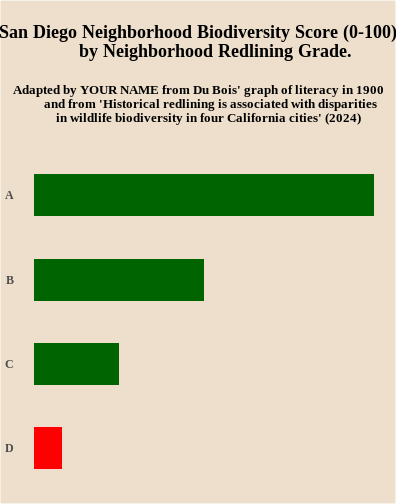

AI assisted plotting with R
Last updated on 2026-04-08 | Edit this page
Overview
Questions
- Why would you use AI to assist with visualization in R?
- How can you use AI in ways that improve your comprehension of visualizations and code?
- What are risks of using AI to help you do visualizations?
Objectives
- Recreate the biodiversity and racial redlining bar chart from PNAS.
- Use AI to help you write R code for the visualization.
- Test and save the code using R Studio or Jupyter Lite.
Biodiversity and redlining bar chart revisited.
In the previous episode, we learned how to adapt the code we wrote for the Du Bois literacy bar chart to recreate a bar chart of biodiversity data in the Du Bois style.
We’re going to recreate the bar chart again by using AI to: * write R code for generating the chart in the Du Boisian style. * gain an understanding of the chart by deleting portions of the code to make the graph simpler, and debugging problems that arise when we delete necessary parts of the code. * write comments explaining the code in the chart.
As noted in the prior episode, the biodiversity bar chart below comes from an article in the Proceedings of the National Academy of Science (PNAS) here The bar chart shows lower biodiversity in San Diego neighborhoods that were redlined in the middle of the 20th century because they had large numbers of non-white residents. The home owners loan corporation (HOLC) tracked neighborhoods that would have been redlined by the Federal Housing Adminsation and local lenders, making it harder to get affordable homeloans in the neighborhood and “serving as a proxy for numerous prior and existing racialized policies at the federal, state, and local level that reinforced racial segregation, discrimination, and disinvestment” (Estian et al. 2024). The chart shows lower biodersity scores (0-100) in neighborhoods with lower A to D HOLC letter grades (indicating worse redlining treatment of neighborhoods).

The latest AI tools allow us to write commands for AI models using natural language. So when we write an AI prompt, it’s like writing code but in the language we use in everyday discussion.
If we save and consistently reuse the natural language commands we write for AI models, we will tend to get reproduceable results (but not always for reasons you can read about elsewhere).
So our first step is to write a natural language prompt (i.e. command) asking an AI tool to recreate the biodiversity chart in the Du Bois style. So:
- Open ChatGPT or Claude in another browser window.
- Write the command below in the chat field and submit it.
give me code for recreating this figure in R
using only the tidyverse library:
https://github.com/HigherEdData/Du-Bois-STEM/blob/main/readings-images/biodiversity_redlining.png?raw=trueNext, copy and paste the code into an .Rmd file or your a [JupyterLite Notebook cell].
After running the code, click the dropdown below to see if you get the same code and results we did.
Code and results ChatGPT gave the authors:
Here’s the code we co
R
library(tidyverse)
OUTPUT
── Attaching core tidyverse packages ──────────────────────── tidyverse 2.0.0 ──
✔ dplyr 1.2.0 ✔ readr 2.2.0
✔ forcats 1.0.1 ✔ stringr 1.6.0
✔ ggplot2 4.0.2 ✔ tibble 3.3.1
✔ lubridate 1.9.5 ✔ tidyr 1.3.2
✔ purrr 1.2.1
── Conflicts ────────────────────────────────────────── tidyverse_conflicts() ──
✖ dplyr::filter() masks stats::filter()
✖ dplyr::lag() masks stats::lag()
ℹ Use the conflicted package (<http://conflicted.r-lib.org/>) to force all conflicts to become errorsR
# ---- Example data (replace with actual values from figure) ----
df <- tibble(
group = c("A", "B", "C", "D", "E"),
value = c(10, 25, 40, 30, 15)
)
# ---- Order factor to match visual (important!) ----
df <- df %>%
mutate(group = fct_reorder(group, value))
# ---- Plot ----
ggplot(df, aes(x = value, y = group)) +
# bars
geom_col(
fill = "#b2182b", # deep red (Du Bois style)
width = 0.8
) +
# value labels inside bars
geom_text(
aes(label = value),
hjust = 1.2,
color = "white",
size = 5
) +
# expand limits so labels fit
scale_x_continuous(expand = expansion(mult = c(0, 0.05))) +
# titles
labs(
title = "Biodiversity and Redlining",
x = NULL,
y = NULL
) +
# minimal theme
theme_minimal(base_size = 14) +
theme(
panel.grid = element_blank(),
axis.text.y = element_text(face = "bold"),
axis.text.x = element_blank(),
axis.ticks = element_blank(),
plot.title = element_text(face = "bold", hjust = 0.5)
)

2. Correct the values for each bar
ChatGPT gave us code that used made up values and 5 letter grades instead of 4.
Can you correct that in the code yourself?
Here are the correct biodiversity scores by letter grade:
A - 48 B - 24 C - 12 D - 4
Click here you can’t figure it out yourself:
R
library(tidyverse)
# ---- this puts actual biodiversity values in the dataframe by grade ----
df <- tibble(
group = c("A", "B", "C", "D"),
value = c(48, 24, 12, 4)
)
df
OUTPUT
# A tibble: 4 × 2
group value
<chr> <dbl>
1 A 48
2 B 24
3 C 12
4 D 4- Add comments that explain what the code does
AI tends to be good at adding comments to code that explain what each line of code does.
Try this by copy and pasting your revised code into your AI chat with the prompt:
Add comments that explain what is done by each line of this R code.Click to see the commented code ChatGPT gave us back:
R
library(tidyverse)
# ---- this puts actual biodiversity values in the dataframe by grade ----
df <- tibble(
group = c("A", "B", "C", "D"),
value = c(48, 24, 12, 4)
)
df
OUTPUT
# A tibble: 4 × 2
group value
<chr> <dbl>
1 A 48
2 B 24
3 C 12
4 D 4- Learn by commenting out unnecessary code.
Legible code is succinct code. You can learn what different parts of this code do by commenting out lines that you think are unnecessary. In R, we do this by adding the # comment symbol before a line of code.
Then you can debug errors this creates or delete the # to restore the code.
Sometimes, different lines of code are connected to each other. So if comment out or change a line of code, you have to change another.
What do you think can be just commented out
What we comment out and its output:
R
library(tidyverse)
# ---- Example data (replace with actual values from figure) ----
df <- tibble(
group = c("A", "B", "C", "D"),
value = c(48, 24, 12, 4)
)
# ---- Order factor to match visual (important!) ----
df <- df %>%
mutate(group = fct_reorder(group, value))
# ---- Plot ----
ggplot(df, aes(x = value, y = group)) +
# bars
geom_col(
fill = "#b2182b", # deep red (Du Bois style)
width = 0.8
) +
# value labels inside bars
geom_text(
aes(label = value),
hjust = 1.2,
color = "white",
size = 5
) +
# expand limits so labels fit
scale_x_continuous(expand = expansion(mult = c(0, 0.05))) +
# titles
labs(
title = "Biodiversity and Redlining",
x = NULL,
y = NULL
) +
# minimal theme
theme_minimal(base_size = 14) +
theme(
panel.grid = element_blank(),
axis.text.y = element_text(face = "bold"),
axis.text.x = element_blank(),
axis.ticks = element_blank(),
plot.title = element_text(face = "bold", hjust = 0.5)
)

Revised code and output:
R
library(tidyverse)
# Example data (replace with your actual dataset)
df <- tibble(
grade = factor(c("A", "B", "C", "D"), levels = c("A","B","C","D")),
biodiversity = c(120, 95, 70, 45)
)
# Du Bois–inspired palette (closer to typical redlining colors)
du_bois_palette <- c(
"A" = "#2E8B57", # green
"B" = "#F2C94C", # yellow/gold
"C" = "#E67E22", # orange
"D" = "#C0392B" # red
)
ggplot(df, aes(x = grade, y = biodiversity, fill = grade)) +
# Bars with strong outline
geom_col(width = 0.7, color = "black", linewidth = 1.2) +
# Value labels above bars
geom_text(aes(label = biodiversity),
vjust = -0.6,
size = 5,
fontface = "bold") +
# Custom colors
scale_fill_manual(values = du_bois_palette) +
# Add space above bars
scale_y_continuous(expand = expansion(mult = c(0, 0.12))) +
# Labels (Du Bois style = bold, declarative)
labs(
title = "BIODIVERSITY BY REDLINING GRADE",
subtitle = "Mean species richness across HOLC categories",
x = NULL,
y = "SPECIES COUNT"
) +
# Du Bois–style theme
theme_minimal(base_size = 16) +
theme(
legend.position = "none",
# Remove all gridlines
panel.grid = element_blank(),
# Strong axis lines
axis.line = element_line(linewidth = 1.2, color = "black"),
# Bold axis text
axis.text = element_text(face = "bold", color = "black"),
# Centered, bold titles
plot.title = element_text(face = "bold", size = 20, hjust = 0.5),
plot.subtitle = element_text(size = 13, hjust = 0.5),
# Light paper-like background
plot.background = element_rect(fill = "#F4F1E6", color = NA),
panel.background = element_rect(fill = "#F4F1E6", color = NA)
)

Fix aspect ratio:
R
df<- read.csv(
"https://raw.github.com/HigherEdData/Du-Bois-STEM/refs/heads/main/data/d_biodiversity_redlining.csv")
library(ggplot2)
source("https://raw.githubusercontent.com/HigherEdData/Du-Bois-STEM/refs/heads/main/theme_dubois.R")
ggplot(df, aes(
x = biodiversity,
y = reorder(grade, biodiversity),
fill = grade == "D" # this changes the fill statement to graph the D grade bar in Red
)) +
geom_col(width = .5) +
theme_dubois() +
theme(text = element_text('serif')) +
scale_fill_manual(values = c("TRUE" = "red", "FALSE" = "darkgreen")) +
labs(
title = "\nSan Diego Neighborhood Biodiversity Score (0-100)
by Neighborhood Redlining Grade. \n",
subtitle = "Adapted by YOUR NAME from Du Bois' graph of literacy in 1900
and from 'Historical redlining is associated with disparities
in wildlife biodiversity in four California cities' (2024) \n"
)

3. Improve Accessibility by Adding X Axis Grid Lines and Removing the Use of Red and Green
Some of Du Bois’ graphing choices might not make sense for graphs you want to make. For example, Du Bois doesn’t provide labels or grid lines to make it easy to understand what the range of biodiversity scores are by neighborhood redlining grade. The code cell below adds two lines of code for adding the grid lines.
In addition, red and green bars are difficult to differentiate for those with colorblindness. Try removing the line of code below that set the bar colors to red and green. This should change the bar colors back to default orange and teal ggplot colors that are colorblind accessible.
If you want to customize the chart further to add your own style twist, try a google search or chatGPT query. For a chatGPT query, you could copy and paste the code from below and ask, how could I change this R ggplot code to change the background color to beige?
R
{r, fig.width=5.5, fig.height=7}
df<- read.csv(
"https://raw.github.com/HigherEdData/Du-Bois-STEM/refs/heads/main/data/d_biodiversity_redlining.csv")
library(ggplot2)
source("https://raw.githubusercontent.com/HigherEdData/Du-Bois-STEM/refs/heads/main/theme_dubois.R")
ggplot(df, aes(
x = biodiversity,
y = reorder(grade, biodiversity),
fill = grade == "D" # this changes the fill statement to graph the D grade bar in Red
)) +
geom_col(width = .5) +
theme_dubois() +
theme(text = element_text('serif')) +
scale_fill_manual(values = c("TRUE" = "red", "FALSE" = "darkgreen")) + ## delete this line
labs(
title = "\nSan Diego Neighborhood Biodiversity Score (0-100)
by Neighborhood Redlining Grade. \n",
subtitle = "Adapted by YOUR NAME from Du Bois' graph of literacy in 1900
and from 'Historical redlining is associated with disparities
in wildlife biodiversity in four California cities' (2024) \n"
) +
# Below is code to add grid lines with labels
scale_x_continuous(
breaks = seq(0, 60, by = 10), # Set tick positions every 10 units
) +
theme(
axis.text.x = element_text(size = 12),
panel.grid.major.x = element_line(color = "lightgray")
)Answer:
R
df<- read.csv(
"https://raw.github.com/HigherEdData/Du-Bois-STEM/refs/heads/main/data/d_biodiversity_redlining.csv")
library(ggplot2)
source("https://raw.githubusercontent.com/HigherEdData/Du-Bois-STEM/refs/heads/main/theme_dubois.R")
ggplot(df, aes(
x = biodiversity,
y = reorder(grade, biodiversity),
fill = grade == "D" # this changes the fill statement to graph the D grade bar in Red
)) +
geom_col(width = .5) +
theme_dubois() +
theme(text = element_text('serif')) +
scale_fill_manual(values = c("TRUE" = "red", "FALSE" = "darkgreen")) + ## delete this line
labs(
title = "\nSan Diego Neighborhood Biodiversity Score (0-100)
by Neighborhood Redlining Grade. \n",
subtitle = "Adapted by YOUR NAME from Du Bois' graph of literacy in 1900
and from 'Historical redlining is associated with disparities
in wildlife biodiversity in four California cities' (2024) \n"
) +
# Below is code to add grid lines with labels
scale_x_continuous(
breaks = seq(0, 60, by = 10), # Set tick positions every 10 units
) +
theme(
axis.text.x = element_text(size = 12),
panel.grid.major.x = element_line(color = "lightgray")
)